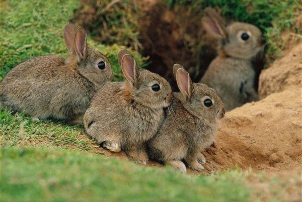
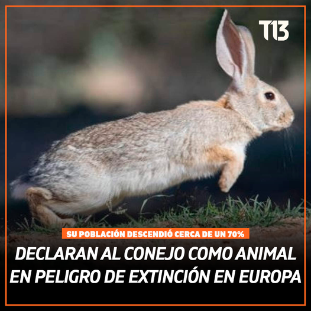

El conejo europeo (Oryctolagus cuniculus) es una especie ampliamente distribuida, originaria del suroeste de Europa, en particular de la Península Ibérica y el sur de Francia. A lo largo del tiempo, y debido a su valor como especie cinegética y fuente de alimento, ha sido introducido en numerosos países de Europa, Oceanía, América del Sur e incluso algunas zonas del norte de África. En muchos de estos lugares se ha adaptado con éxito, aunque en otros ha generado impactos negativos al convertirse en una especie invasora.
Este animal prefiere hábitats con vegetación baja y suelos adecuados para excavar, como terrenos arenosos, arcillosos o poco compactos. Su hábitat ideal combina áreas abiertas con pastizales y arbustos, intercaladas con zonas de refugio donde pueda construir madrigueras profundas y complejas, conocidas como vivares. Estos vivares no solo les permiten protegerse de depredadores, sino que también ofrecen condiciones térmicas estables y humedad adecuada para la cría.
Es frecuente encontrar poblaciones de conejos en áreas agrícolas, bordes de caminos rurales, matorrales mediterráneos, dehesas, dunas costeras y terrenos forestales claros. Incluso en entornos humanizados, como parques o zonas periurbanas, los conejos pueden establecerse si encuentran refugio y alimento disponibles. Su capacidad para adaptarse a distintos tipos de hábitat lo ha convertido en una de las especies más exitosas entre los mamíferos silvestres.
A pesar de esta adaptabilidad, las poblaciones naturales de conejo en sus zonas de origen se ven afectadas por la fragmentación del hábitat, la urbanización y la expansión agrícola intensiva, lo que reduce la calidad y disponibilidad de los lugares donde pueden vivir y reproducirse.
Hábitos alimenticios
El conejo es un herbívoro especializado, y su dieta se basa principalmente en una gran variedad de plantas: pastos, tréboles, raíces, hojas de arbustos, cortezas, flores e incluso cultivos agrícolas cuando están disponibles. Su alimentación varía estacionalmente, según la disponibilidad de recursos. En invierno consume principalmente cortezas y raíces, mientras que en primavera y verano se alimenta de hierbas frescas y brotes.
Una característica única de su sistema digestivo es la cecotrofía, un proceso por el cual produce dos tipos de excrementos: unos duros, que descarta, y otros blandos, recubiertos por una película mucosa, que vuelve a ingerir directamente del ano. Estos excrementos blandos, llamados cecotrofos, son ricos en proteínas, vitaminas y ácidos grasos volátiles.
Gracias a este mecanismo, el conejo puede obtener el máximo provecho de los nutrientes presentes en su dieta vegetal, incluso en hábitats donde otros herbívoros tendrían dificultades para sobrevivir. Esta adaptación le permite alimentarse eficientemente en una amplia variedad de entornos.
Hábitos reproductivos
El conejo es reconocido por su altísima capacidad reproductiva. La reproducción es estacional en climas templados, pero en condiciones favorables puede reproducirse todo el año. La gestación dura alrededor de 30 días, y la hembra puede volver a quedar preñada pocas horas después del parto (ovulación inducida por la cópula).
Cada camada puede tener entre 3 y 12 gazapos (crías), y la hembra puede tener hasta 7 camadas anuales. Las crías nacen en madrigueras especiales llamadas gazaperas, donde están protegidas durante los primeros días de vida. Abren los ojos a los 10 días, y al cabo de 3 semanas ya comienzan a salir del nido.
Esta estrategia reproductiva rápida compensa su alta tasa de mortalidad debido a depredadores naturales como zorros, aves rapaces, comadrejas y también a enfermedades.
Estado de conservación

Aunque el conejo es considerado una especie común en muchas partes del mundo, en su hábitat original (la Península Ibérica) ha sufrido un marcado declive en las últimas décadas. Por esta razón, ha sido incluido en la lista roja de la UICN como especie "casi amenazada" y "en peligro" en algunas regiones específicas.
Las principales causas de esta disminución poblacional incluyen:
Pérdida de hábitat por agricultura intensiva, urbanización y destrucción de matorrales.
Caza intensiva en algunas zonas, ya sea como plaga o por deporte.
Enfermedades virales, como la mixomatosis (introducida artificialmente en Francia en 1952 para controlar la población) y la enfermedad hemorrágica vírica, que han diezmado poblaciones enteras.
Reducción de madrigueras por compactación del suelo o intervención humana.
Es importante destacar que el conejo es una especie clave del ecosistema mediterráneo, ya que:
Es presa fundamental de depredadores como el lince ibérico y el águila imperial.
Ayuda a dispersar semillas.
Favorece la regeneración vegetal a través del pastoreo.
Por eso, su conservación es crucial no solo para su especie, sino también para mantener el equilibrio ecológico en muchos ecosistemas.
 El conejo es un herbívoro especializado, y su dieta se basa principalmente en una gran variedad de plantas: pastos, tréboles, raíces, hojas de arbustos, cortezas, flores e incluso cultivos agrícolas cuando están disponibles. Su alimentación varía estacionalmente, según la disponibilidad de recursos. En invierno consume principalmente cortezas y raíces, mientras que en primavera y verano se alimenta de hierbas frescas y brotes.
Una característica única de su sistema digestivo es la cecotrofía, un proceso por el cual produce dos tipos de excrementos: unos duros, que descarta, y otros blandos, recubiertos por una película mucosa, que vuelve a ingerir directamente del ano. Estos excrementos blandos, llamados cecotrofos, son ricos en proteínas, vitaminas y ácidos grasos volátiles.
Gracias a este mecanismo, el conejo puede obtener el máximo provecho de los nutrientes presentes en su dieta vegetal, incluso en hábitats donde otros herbívoros tendrían dificultades para sobrevivir. Esta adaptación le permite alimentarse eficientemente en una amplia variedad de entornos.
El conejo es un herbívoro especializado, y su dieta se basa principalmente en una gran variedad de plantas: pastos, tréboles, raíces, hojas de arbustos, cortezas, flores e incluso cultivos agrícolas cuando están disponibles. Su alimentación varía estacionalmente, según la disponibilidad de recursos. En invierno consume principalmente cortezas y raíces, mientras que en primavera y verano se alimenta de hierbas frescas y brotes.
Una característica única de su sistema digestivo es la cecotrofía, un proceso por el cual produce dos tipos de excrementos: unos duros, que descarta, y otros blandos, recubiertos por una película mucosa, que vuelve a ingerir directamente del ano. Estos excrementos blandos, llamados cecotrofos, son ricos en proteínas, vitaminas y ácidos grasos volátiles.
Gracias a este mecanismo, el conejo puede obtener el máximo provecho de los nutrientes presentes en su dieta vegetal, incluso en hábitats donde otros herbívoros tendrían dificultades para sobrevivir. Esta adaptación le permite alimentarse eficientemente en una amplia variedad de entornos.